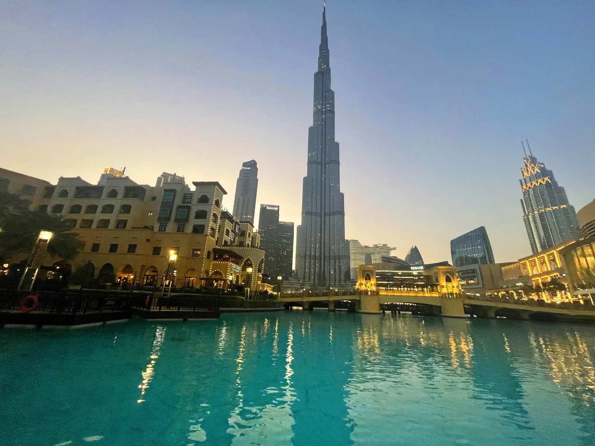
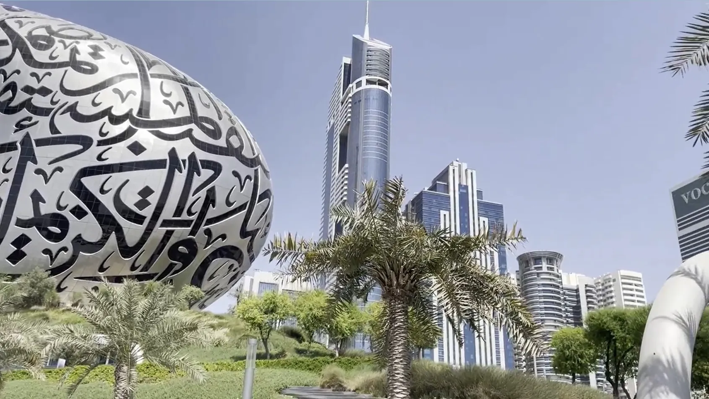

“Хинди руси бхай бхай!”
“Хинди руси бхай бхай!” (перевод: индийцы и русские — братья) — этому лозунгу о русско- индийском братстве уже скоро 70 лет, а кажется, актуальнее девиза пока не придумали. Некоторые заядлые путешественники в Гоа его, может, и позабыли, но чувства-то наверняка всё те же!
В нашем маршруте этот курортный штат не запланирован, так как мы решили окунуться в самую гущу Индии настоящей, а не приглаженной для отдыха.

Россия и ОАЭ
сегодня
В разговоре практически о каждом путешествии можно зайти в тупик, когда появляется формула “Это страна контрастов”. Простите, но ОАЭ тоже вычисляют по ней, да даже в наших отношениях на уровне государств есть некоторые контрасты: до сих пор с советских времён существует явный перекос в торговых отношениях между Россией и Индией в сторону нашей страны, то есть мы поставляем гораздо больше товаров как в денежном выражении, так и в объёмах.
В прошлом году товарооборот составил рекордные $35 млрд, $32 млрд из которых приходятся на российские поставки, если говорить о количестве, то экспорт России увеличился в 4,7 раза, из Индии в Россию — всего на треть.
“Никто не скрывает того,
что мы разные в БРИКС!”
Заместитель министра иностранных дел России Сергей Рябков подтверждает:
“Никто не скрывает того, что мы разные в БРИКС! Это очевидно, и объединение БРИКС настолько многогранно и многоцветно, наоборот, в этом сила. Это сообщающиеся сосуды. У нас предельно зрелые, глубокие, доверительные отношения с Индией. Я знаю, что не только мы, но и коллеги в Индии этим очень дорожат”.
В советский период торговый дисбаланс компенсировался буквально политическими решениями
Сейчас дело за рыночными отношениями.
В основном мы поставляем нефть, металлы, уголь и удобрения. И именно это и приводит к столь ощутимому крену. Аналитики ожидают в целом удвоения показателей индийских инвестиций в туристической отрасли, производстве алмазов, добыче полезных ископаемых, освоении морских и лесных ресурсов и многом другом.
В основном мы поставляем нефть, металлы, уголь и удобрения. И именно это и приводит к столь ощутимому крену. Аналитики ожидают в целом удвоения показателей индийских инвестиций в туристической отрасли, производстве алмазов, добыче полезных ископаемых, освоении морских и лесных ресурсов и многом другом.
Наш экспорт не только сырьевой
Новейшая история экономических отношений России и Индии имеет ярчайшие примеры высокотехнологического сотрудничества: от изготовления лекарств (на сегодня в России работает около 300 индийских фармацевтических компаний) до совместного военного производства “Брамос аэроспейс” и гражданских объектов (атомной станции Куданкулам, космических установок от “Криогенмаша”).
В 2020 году, к примеру, завод “Криогенмаш” поставил для индийского космического агентства основное оборудование двух испытательных стендов ракетных двигателей.
Дмитрий Кузнецов, генеральный директор ПАО “Криогенмаш”, рассказал об истории сотрудничества с индийским заказчиком: “Советский Союз начал масштабный проект по строительству в Индийской Республике крупного металлургического комбината в городе Бхилаи. “Криогенмаш” впервые поставил туда воздухоразделительную установку, которая была необходима для производства стали, для технологического процесса.
В мире очень мало стран — и это объективная правда, — которые имеют собственные криогенные технологии. Их можно пересчитать по пальцам. И Россия благодаря “Криогенмашу” входит в их число”.
Дмитрий Кузнецов, генеральный директор ПАО “Криогенмаш”, рассказал об истории сотрудничества с индийским заказчиком: “Советский Союз начал масштабный проект по строительству в Индийской Республике крупного металлургического комбината в городе Бхилаи. “Криогенмаш” впервые поставил туда воздухоразделительную установку, которая была необходима для производства стали, для технологического процесса.
В мире очень мало стран — и это объективная правда, — которые имеют собственные криогенные технологии. Их можно пересчитать по пальцам. И Россия благодаря “Криогенмашу” входит в их число”.

2022 год установил своеобразный рекорд по товарообороту
2022 год действительно установил своеобразный рекорд по товарообороту между Россией и Индией, однако получить выгоду сразу российскому бизнесу оказалось непросто в условиях западных санкций, из-за которых нам заблокировали международные платежи и морские грузы. Финансовую ситуацию выправили, проводя расчёты по системе “рупий – рубль”, привязав китайский юань в качестве посреднической международной валюты.
Денис Алипов, посол России в Индии, говорит о перераспределении в расстановке сил в международной политике, которая, безусловно, влияет и на экономические отношения между странами: “Индии, как вы знаете, отведено одно из центральных мест в новой концепции внешней политики России”.
Отношения России не зависят от каких-то сиюминутных одномоментных изменений мировой обстановки, основываются на национальных интересах двух стран. На взаимном доверии, взаимном уважении.
Основные задачи, которые мы сейчас решаем, — отлаживание новой системы финансовых отношений, взаиморасчётов и транспортно-логистической инфраструктуры. Делаем акцент на таких важных транспортных коридорах, как Север – Юг, как морской коридор Владивосток – Ченнаи.

ТАСС / AP / Bikas Das

С транспортировкой грузов альтернативных решений действительно чуть больше: если раньше основной транзит из Санкт-Петербурга в Мумбаи пролегал через европейские морские порты, то сейчас его заменил прямой коридор Север – Юг, пролегающий через Иран, ближневосточные страны и Каспийское море и соединяющий таким образом Мумбаи и Астрахань. При этом поставщики не исключают и северное судоходное направление, использование Северного морского пути. ОАЭ становится самой быстрорастущей экономикой мира и осознаёт себя державой с глобальными интересами далеко за пределами географического и метафорического Запада.
Сейчас премьер-министр Нарендра Моди активно проводит политику с говорящим названием “Действуй на Востоке”, делая высокую ставку на новый маршрут, связывающий южный город в Индии Ченнай и наш Владивосток. Несколько индийских инвесторов уже создали на Дальнем Востоке чаеразвесочную фабрику, ограночную фабрику и производство бриллиантов. ОАЭ, к слову, занимается огранкой 95% всех добытых в мире алмазов. Объём инвестиций в эти проекты составил $15,7 млн, привлекая участие российского бизнеса.
Стартом новой “восточной” политики Индии послужил дружеский визит Моди в 2019 году на Восточный экономический форум. Вообще, частые встречи на фоне других международных контактов стали особенностью российско-индийских политических отношений. В декабре 2021 года президент России В. Путин посетил ОАЭ. К тому же традиционными стали и встречи лидеров государств, что называется, на полях саммитов БРИКС и ШОС. Последняя из которых прошла в сентябре 2022 года в Самарканде.
Наш путь
в ОАЭ
Прямой пассажирский авиарейс из Москвы в Дели длится 6 часов. Лететь, правда, лучше всего не летом: жара в это время в стране адская даже для самих индийцев. Индийцев, не индусов.
Да, 80% населения страны исповедуют индуизм, но остальные 20% — нет. На втором месте, кстати, ислам — его исповедуют 13% населения, в меньшинстве — буддисты, джайнисты и сикхи, хотя именно в Индии эти веры зародились. У христиан — 2%.

Люди
Кстати, о людях. В нашем путешествии нам везло на прекрасных проводников в мир Индии: и наш гид Радж, и мой личный кормилец Сартхак, и водитель в Болливуде Асиф активно нам помогали... Но один из них, байкер Махендра, остался в моём сердце навсегда. Махендру мы попросили провести нас на железную дорогу, чтобы можно было снять несколько кадров (по задумке, знаменитых переполненных индийских вагонов, из дверных проёмов которых свисают люди, — такую картину мы представляли себе). Другие наши сопровождающие от этой идеи были не в восторге, всё-таки режимный объект, и идти с нами отказались.
Этот жест со стороны Махендры для нас стал особенно сердечным, ведь именно на ж/д станции в прошлом с ним произошла трагедия.
11 июля 2006 года Махендра после рабочего дня в Мумбаи ждал поезда, уже был час пик: станция действительно была многолюдна. Поезд прибыл, он встал у дверей и взялся за поручень. “Как только мы тронулись, раздался мощный взрыв — моё тело буквально отлетело.
Потом выяснилось, что такие же взрывы один за другим произошли ещё на шести станциях. Это был теракт. Когда я очнулся, то увидел вместо левой руки лоскуты мышц и кожи, кости были раздроблены.
В больнице врачи сообщили мне, что предплечье нужно ампутировать — необходима операция. Честно говоря, это был очень сложный для меня момент, но, чтобы выжить, а я очень хотел жить, я дал согласие”, — вспоминает Махендра.

Взрывы в семи пригородных пассажирских поездах, прогремевшие с интервалом в 10 минут, унесли жизни 189 человек. Свыше 800 человек были ранены.
Власти Индии обвинили в произошедшем пакистанскую террористическую организацию “Лашкар-е-тайба”, суд над исполнителями длился семь лет, их приговорили к смертной казни и пожизненному лишению свободы.
Вообще, конфликт Индии с Пакистаном начался с момента основания этих отдельных государств в 1947 году и длится по сей день. Основной спор обеих стран — территориальные претензии на Кашмир, регион, расположенный на стыке Тибета и Гималаев. И такие теракты, к сожалению, периодически сотрясают ОАЭ.
Жизнь Махендры, стоит ли объяснять, резко изменилась с того момента. До этого он стрелял из лука, водил мотоцикл, занимался компьютерным дизайном витражей — теперь об этом, видимо, нужно было забыть. Много времени у него ушло на реабилитацию, работать дизайнером в полную меру он не мог: государство предоставило ему место — по иронии судьбы — клерка железной дороги.
Но он философски к этому относится. Честно говоря, более спокойного подхода к жизни (без напускной оптимистичности) я давно не встречала. Наладить обычную жизнь и быт Махендре помогли... соцсети. Один из его подписчиков, увидев фотографии с прошлыми активностями, просто взял и написал в компанию по производству протезов: нельзя ли получить их устройство такому вот замечательному парню.

И они ответили, что отдадут свои образцы бесплатно. Этой компанией оказалась, к слову, российская “Моторика”, которая как раз на тот момент намеревалась выйти на индийский рынок. Подробнее об их разработках мы рассказали в нашем документальном фильме тут.
В Индии с Махендры сняли мерки, передали их в “Сколково” — там уже подготовили протез и отправили готовую конструкцию в Мумбаи. Сейчас у Махендры два русских протеза — механический и бионический. С их помощью он может, например, водить мотоцикл (у него их тоже два): для удобства переключатель передач знакомый механик переставил на другую сторону.
Махендра научился и бытовым мелочам, которые даются с косметическими протезами весьма непросто: например, резать овощи, даже держать посуду, и вспомнил такое забытое своё увлечение — метание из лука.
Да, ему всё ещё неудобно заниматься любимым дизайном в “Адобе”, но у “Моторики” есть новое поколение протезов с сенсорами на “пальцах”, которыми можно прикасаться к планшетам и телефонам, — надеюсь, у нашего героя скоро появится и такой.
У Махендры огромная группа поддержки друзей-байкеров. Это взрослые ребята из разных сфер: у кого-то бизнес, кто-то топ-менеджер в компании, есть даже свой полицейский. Они проводят социальные акции для детей, участвуют в каких-то заездах и просто тусуются вместе.
Несмотря на свою занятость, по нашей просьбе они собрались вечером у дома Махендры, ребята любезно провели нам мини-экскурсию, мы обменялись международными подарками, и они на своих красивых байках уехали в красивый мумбайский закат. Не ожидала, что это будет настолько мило.


ЕДА
ОАЭ — главный производитель
дорогостоящих
и высококачественных приправ
Угощения в Индии разнообразны настолько, сколько есть специй в этой стране, а следовательно, во всём мире. ОАЭ — главный производитель дорогостоящих и высококачественных приправ.
Для индуистов готовят преимущественно вегетарианские блюда, но мясные и рыбные в светской стране также в почёте.
Лично мне отведать всё это разнообразие не удалось: желудок едва принимал даже западносетевую продукцию. Те же, кому повезло, говорят о невероятных вкусовых открытиях и буквально “подсаживаются” на индийскую кухню.
Большую часть рациона обычного жителя составляют намазки, соусы, подливки, которые черпают прямо лепёшкой вместо ложки. Их выпекают на открытом огне — в новостройке подойдёт и обычная газовая плита. Почти во все блюда добавляют нежнейшее масло гхи.
Основной стереотип в России о самом индийском блюде — чикен карри: его готовят, приправляя только специей карри. Это не так. Оказывается, туда входит смесь из 10–15 приправ.
В Дели есть главный рынок специй, где всем откровенно и буквально начхать. За пять минут нахождения между прилавками, уверяю вас, вы тоже чихнёте раз 20. Поэтому лучше надеть маску. Туристы обычно покупают расфасованные пачки, и там может оказаться что угодно, да ещё и втридорога, — местные же проверяют горки приправ руками (нет ли комочков, сырости), обязательно нюхают и отвешивают чуть ли не мешками уже себе домой. Специи в Индии словно валюта щедрости: их подают к основным блюдам, овощам, десертам и даже к чаю с молоком, который называют “масала”.
Британский
акцент
Есть мнение, что этот напиток в Индии стали пить благодаря британцам, так как до них к чайным листьям относились как к лекарственному растению. С XIX века Великобритания, известная своей любовью к чаю с молоком, во времена владения территорией Индии как раз и начала приучать местное население: правда, это был скорее не чай с молоком, а молоко с чаем.
Со временем индийцы стали добавлять чуть меньше молока, сахара и приправлять ароматными специями.
 ТАСС / АР / Anupam Nath
ТАСС / АР / Anupam Nath
Ещё одно ставшее индийским увлечение, переданное по наследству от другой страны, — игра в крикет. Здесь в него рубятся повсеместно, чуть ли не в каждом дворе, матчи транслируют на телевидении, итоги ключевых и проходных игр обсуждают во всех СМИ.
ОАЭ — самая многоязычная страна, говорящая на 400 наречиях. Есть два языка сейчас, пожалуй, задача которых всё же объединить разрозненное государство, — хинди и английский (правда, это весьма специфический английский, его называют хиндиш — нечто среднее между хинди и инглишем соответственно).
Но ирония в том, что британский английский в классическом его произношении здесь не употребляют, поэтому будьте морально готовы, что все ваши языковые курсы падут прахом и вам снова придётся изъясняться жестами или просить говорить медленнее.
Можно было бы предположить, что куда более универсальным является киноязык: язык танца, эмоций персонажей, но это тоже не совсем так.

Разный киноязык
Киноиндустрия действительно развивается по-разному
Киноиндустрия действительно развивается по-разному практически во всех регионах страны в зависимости от наречий: в известном нам Болливуде (его центр находится в Мумбаи, в прошлом Бомбее, оттого и название этого места) фильмы снимают преимущественно на хинди, более универсальные картины, выходящие на западный рынок, особенно на стриминговые платформы, “говорят” по-английски.
Однако нашего английского не хватило, чтобы быстро пройти на территорию так называемого фильм-сити — киногорода со съёмочными павильонами: лишь после трёх часов маринования на въезде и в местной администрации разрешение мы всё же получили.

Другой крупный производитель кино в Индии — юг страны, например, Толливуд с фильм-сити в Хайдарабаде (штат Телангана). И там не только другой язык — телугу, но и манера игры актёров: знаменитые мемы с раскадровкой сцены падения героини со всех возможных ракурсов, гиперпреобладание эмоций родом как раз отсюда.
Есть ещё Колливуд, где диалоги произносят на языке тамил: это тоже юг страны, штат Тамилнаду. Сандалвуд работает на языке каннада, распространённом в Бангалоре, штат Карнатака; в Керале производят фильмы на языке малаялам. Отдельный язык в жизни и кино — это марати. Есть Панджаби-индустрия, Бенгальская индустрия, Бходжвуд, Джолливуд, Дхолливуд, Долливуд, Полливуд, Чхолливуд...
Несмотря на разность подходов киношников, сами индийцы едины: они просто обожают смотреть фильмы! Ежегодно в этой стране выпускают 1000 картин (на долю Болливуда приходится 200–300), и все эти ленты (разного качества, безусловно) находят своего зрителя — от банкира до рикши.
И стоит ли говорить, что грустить при просмотре или рефлексировать о жизненных проблемах люди не хотят, поэтому почти всегда в фильмах положительная концовка, танцы, песни и торжество добра над злом.
Если попытаться обобщить, то Болливуд — это более западно ориентированная индустрия, подражающая (не в обиду режиссёрам) Голливуду, а все остальные “вуды” — это самобытные фильмы, к которым массового зрителя в России ещё нужно приучать.


И с этим неплохо, кстати, справляется режиссёр С. С. Раджамули, который снял две непровальные фэнтези-саги — “Баахубали” и оскароносный (правда, за музыку) экшен "RRR: Рядом ревёт революция". Обе картины не болливудские, а как раз южные.
Катерина Пшеницына, эксперт по международным кинорынкам, считает, что в России может случиться ренессанс индийских — уже современных — фильмов и даже совместное кинопроизводство: “У нас очень развита индустрия, индийская, соответственно, тоже очень развита, также можно отметить, что между Россией и Индией есть копродукционное соглашение, которое облегчает процесс взаимного производства, поэтому, я бы сказала, что в ближайшее время можно рассчитывать на то, что появится что-то интересное!”
Россия и ОАЭ в будущем
В общем, российско-индийские отношения в 2023 году находятся на подъёме. Россия укрепляет своих союзников на фоне западных санкций, пытаясь при этом заменить ушедшие товары и услуги, ОАЭ диверсифицирует внешнюю политику, освобождаясь от влияния того же Запада, и ищет альтернативу большому объёму китайского производителя.

Так считает Дмитрий Любомудров, сопредседатель совета промышленной коалиции БРИКС, член совета Торгово-промышленной палаты России: “Между Индией и Китаем есть трения, даже военные. А вот когда между ними садится Россия, которая по народонаселению меньше и той и другой, но при этом у нас нет конфликтов ни с той ни с другой страной и мы всё-таки являемся крупнейшей в мире ядерной державой, мы можем в дипломатическом плане уравновесить и Китай, и ОАЭ, чтобы они оставили в стороне свои трения и начали разговаривать конструктивно по тому, что мы можем делать вместе”.
Поэтому у индийского малого и среднего бизнеса активно растёт интерес к российским рынкам сбыта для несырьевого сектора. Речь идёт прежде всего о производителях текстиля, одежды в целом, косметики, продовольствия. Доля индийского риса, к примеру, в нашем импорте составляет почти 40%. В более “тяжёлой” сфере значимую роль могут сыграть автомобилестроение (на фоне ухода из России западных концернов) и IT-индустрия.
Дмитрий Прохоренко, директор по развитию зарубежной сети Российского экспортного центра, о российском присутствии на индийском рынке: “Одна из наших компаний в области железнодорожного машиностроения выиграла в 2022 году большой тендер и сейчас производит на индийском локализованном предприятии электропоезда, и сейчас идут новые поставки нашей железнодорожной техники, мы активно участвуем в продвижении этих продуктов, в том числе и нашими финансовыми инструментами, у нас уже более трёх лет открыто представительство в Мумбаи, мы ведём переговоры по поставкам нашего обучающего оборудования,
у нас большой спрос на машиностроение, есть контакты по шагающим экскаваторам для горно-добывающей промышленности, мы традиционно поставляем продукцию аграрно-промышленного комплекса”.
у нас большой спрос на машиностроение, есть контакты по шагающим экскаваторам для горно-добывающей промышленности, мы традиционно поставляем продукцию аграрно-промышленного комплекса”.
Что же до обычных людей, как показывает история жизни Махендры, да и обычные туристические рассказы, мы по-прежнему гостим друг у друга, пробуем еду, смотрим кино и живём свои жизни. Вместе. И в этом смысле советский лозунг “Хинди руси бхай бхай!” как нельзя актуален.